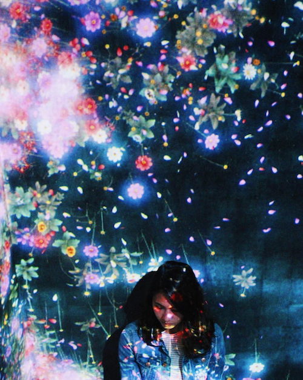
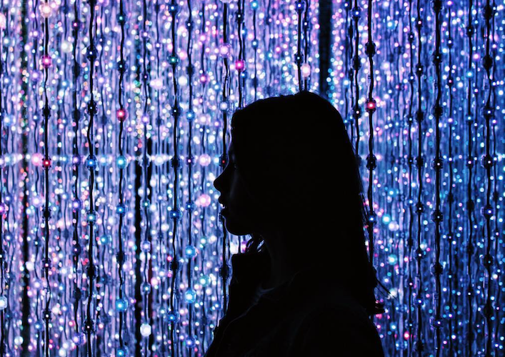
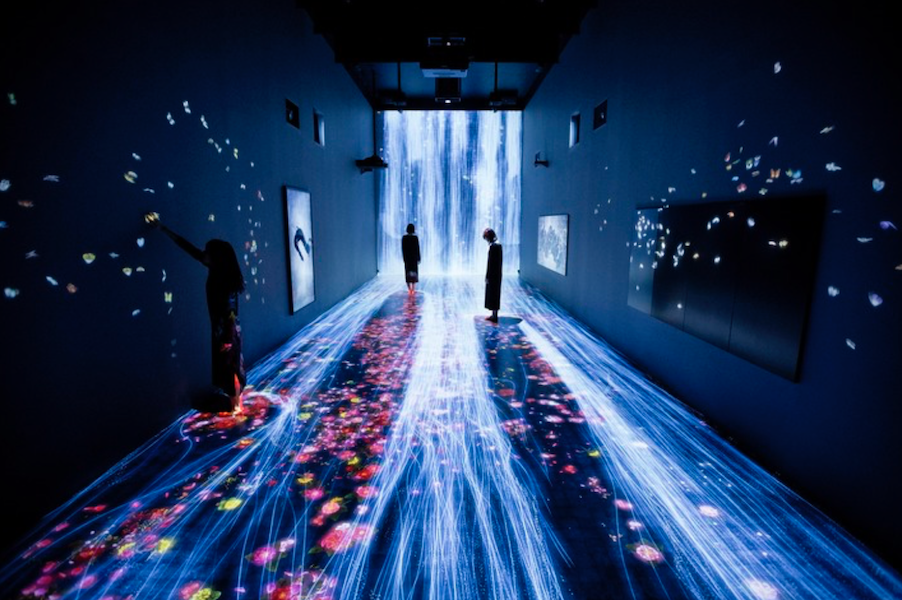

Comparative Research
Take Me HomeJennifer Steinkamp, teamLab, and Digial Flowers
  My project focuses on using a universal plant, the flower, to showcase the beauty of diversity in humanity. Two artists who I think showcase the beauty of digital flowers are teamLab and Jennifer Steinkamp. TeamLab, a digital art group from Japan, has exhibitions throughout the world that use processing to create interactive displays based on nature. Jennifer Steinkamp, a UCLA Design and Media Arts professor and digital exhibition artists, creates interactive and digital 3D space installations. The two artists have very similar styles with their floral displays &mdash the likes of which I am interested in creating a display. Both Steincamp and teamLab display their installations in public, interactive spaces, in addition to museums. Jennifer Steinkamp has had her work displayed in Times Square in New York, as well as other outdoor exhibitions, and teamLab has displayed their art in tea houses, on castle walls, and in gardens. Steinkamp’s work reflects fruit, feathers, and floral blooms in colorful, digital fields. In comparison to the work done by teamLab, it tends to take on a slightly more 3D effect. Her projects in the fruit series seem to have a little more depth and graphic shape than those of teamLab. Then again, some of her projects take on very clear visual likeness to that of the teamLab installations. TeamLab is known for its soft hues, dark backgrounds, and interactivity. They use processing to create many of their installations, which include wall and full-room projections. I have had the privilege to visit one of their installations and it was an ethereal, immersive experience that transported you between environments; a stormy ocean, a field of blooms, a trickling waterfall, and a galaxy of stars.
You can check them out here: teamLab Jennifer Steinkamp Portfolio